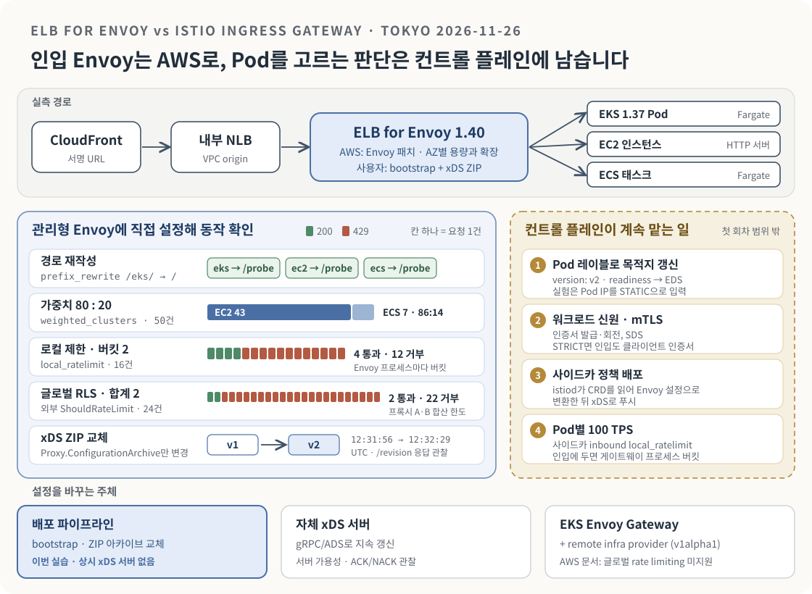
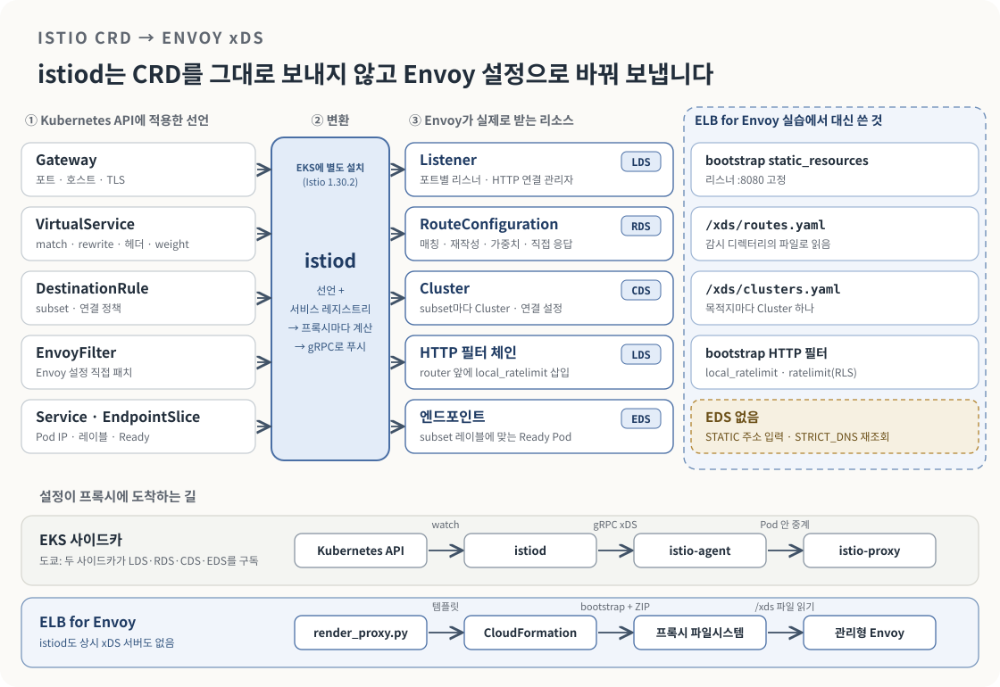
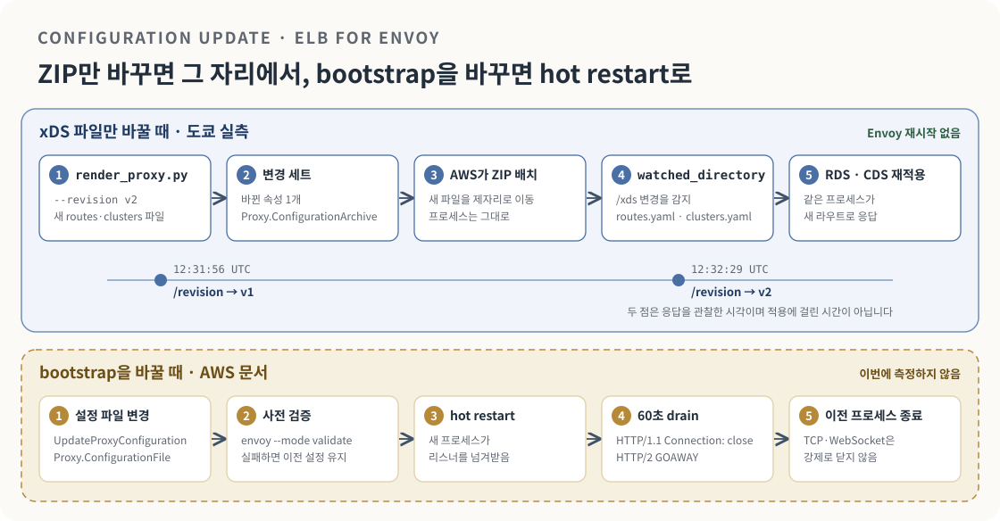
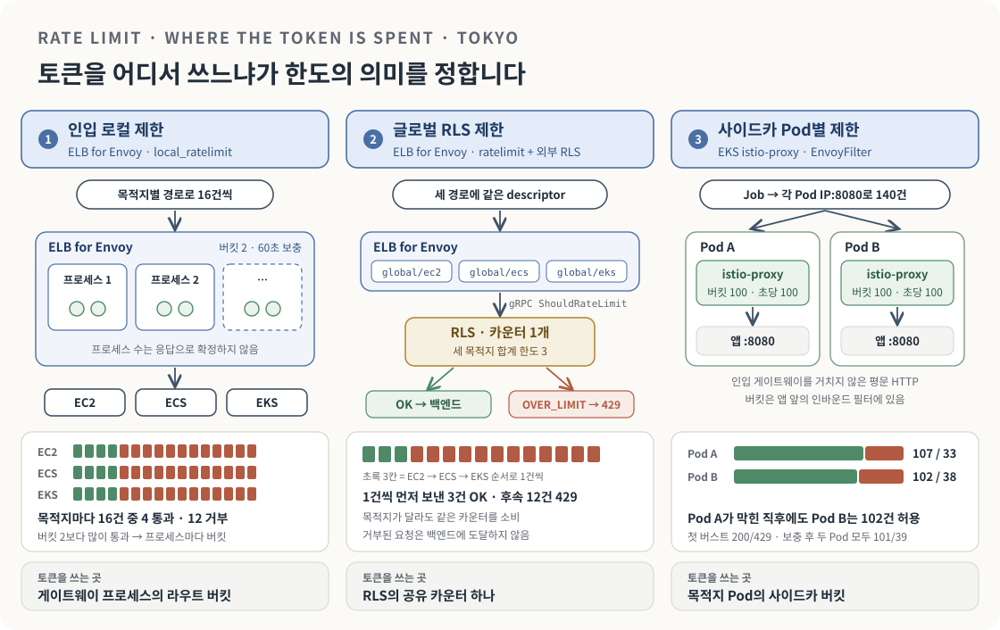

ENGINEERING NOTES
ELB for Envoy가 Istio Ingress Gateway를 대체할 수 있을까?
ELB for Envoy를 쓰면 AWS가 Envoy 프록시의 패치와 확장을 맡고, 사용자는 리스너와 라우팅 규칙을 정의합니다. Istio Ingress Gateway의 역할을 어디까지 맡길 수 있을까요? 도쿄에서 관리형 Envoy에 직접 설정을 적용해 보니 경로 재작성, 가중치 라우팅, 로컬 요청 제한이 모두 별도 xDS 서버 없이 동작했습니다. AWS 출시 공지
Istio YAML을 그대로 쓸 수 있는지는 누가 읽느냐에 달려 있습니다. ELB for Envoy 자체는 VirtualService·DestinationRule·EnvoyFilter를 읽지 않습니다. Kubernetes에 CRD만 설치하면 이 객체들을 생성·저장할 수 있지만 요청 경로는 바뀌지 않습니다. istiod는 자신에게 연결된 프록시를 위해 이 선언을 xDS로 변환합니다. 기존 Istio 게이트웨이가 istiod에 연결돼 있다면 운영자는 Istio YAML을 계속 쓰고 xDS를 직접 작성할 필요가 없습니다. 인입 프록시를 ELB for Envoy로 바꿀 때는 그 프록시가 호환되는 설정과 신원으로 같은 컨트롤 플레인에 연결돼야 합니다. 도쿄에서 istiod에 연결한 것은 EKS 사이드카였고, 인입 ELB에는 bootstrap과 파일 기반 xDS를 직접 전달했습니다. AWS의 Envoy 설정 방식 · Istio 아키텍처
AWS가 문서화한 Kubernetes 연동을 선택하면 Envoy Gateway가 Gateway·HTTPRoute 같은 Gateway API를 읽어 xDS를 만듭니다. 이 방식도 xDS를 손으로 쓸 필요는 없지만, 기존 Istio CRD를 그대로 소비하지는 않습니다. Istio 없이 VirtualService YAML 자체를 유지하려면 그 의미를 구현하고 대상 프록시까지 설정을 배포하는 별도 컨트롤러가 필요합니다. AWS의 Envoy Gateway 통합
주문 API를 기준으로 보면 경계가 선명해집니다. “주문 요청의 10%를 새 버전으로 보낸다”는 정책에서 Envoy는 목적지를 선택합니다. 새 버전의 Pod가 교체될 때마다 레이블과 준비 상태를 보고 목적지 목록을 갱신하는 쪽은 컨트롤 플레인입니다. “Pod 하나가 초당 100건을 받는다”는 정책은 요청이 어느 Pod에 도착했는지 아는 지점에서 집행해야 합니다.
요청 경로와 설정 경로
주문 API Pod 하나에는 컨테이너가 두 개 있습니다. 요청은 그 Pod의 istio-proxy 사이드카를 거쳐 같은 Pod의 echo 앱으로 갑니다. 둘은 Pod IP와 네트워크 네임스페이스를 공유합니다. istio-system의 별도 istiod Pod는 설정을 전달하며 주문 요청은 거치지 않습니다. 그림에서 EKS 제어 플레인은 AWS가 운영하는 Kubernetes API·etcd이고, Istio 제어 플레인은 플랫폼 팀이 EKS 워커에 설치한 istiod입니다.
| 궁금한 점 | 도쿄 실습에서의 답 |
|---|---|
| 인입 Envoy의 원본 설정은 어디에 있나? | render_proxy.py가 만드는 CloudFormation 템플릿입니다. Proxy.ConfigurationFile에는 bootstrap, Proxy.ConfigurationArchive에는 라우트와 업스트림을 담은 ZIP을 넣습니다. |
| xDS 파일은 어디서 읽나? | AWS가 ZIP을 프록시 파일시스템에 펼칩니다. bootstrap의 HTTP 리스너가 /xds/routes.yaml(RDS)을, 클러스터 설정이 /xds/clusters.yaml(CDS)을 참조합니다. 이 인입 프록시에는 상시 xDS 서버가 없습니다. |
| EKS 사이드카는 누가 만드나? | Deployment의 ReplicaSet이 새 Pod를 요청할 때 API 서버가 Istio 주입 웹훅을 호출합니다. 웹훅이 Pod 명세에 istio-proxy를 추가하고 kubelet이 실행합니다. 이번 Pod에서 echo는 앱 컨테이너, istio-proxy는 restartPolicy: Always인 네이티브 사이드카였습니다. 정책 변경은 별도 istio-system/istiod Deployment의 Pod에서 xDS로 받습니다. |
| EC2와 ECS에도 Envoy가 생기나? | 이 실험의 EC2에는 HTTP 서버가, ECS 태스크에는 echo 컨테이너가 요청을 받았습니다. 둘 다 관리형 Envoy의 원격 업스트림으로 등록했으며 백엔드에 Envoy를 설치하지 않았습니다. EC2에 별도 프록시를 설치하거나 ECS 태스크에 사이드카를 명시하면 그때 추가 프로세스가 생깁니다. 실험에 사용한 RLS는 별도 ECS 태스크입니다. |
관리형 프록시의 설정 생성 코드 · Istio 주입 절차
EC2와 ECS에는 프록시를 누가 넣나
도쿄에서 EC2에는 HTTP 서버 프로세스를, ECS의 echo 태스크에는 앱 컨테이너 하나를 띄웠습니다. 관리형 Envoy가 두 백엔드의 IP로 연결했기 때문에 양쪽에 Istio를 설치할 필요가 없었습니다. 아래 그림은 백엔드에도 프록시를 두기로 했을 때 선택할 수 있는 세 가지 배치입니다. 세 줄은 서로 다른 선택지입니다. 실측 EC2 워크로드 · 실측 ECS 태스크 정의
| 배치 | 프록시가 실행되는 위치 | 누가 시작하고 설정하나 |
|---|---|---|
| EC2를 Istio 메시로 편입 | 앱과 같은 VM에 별도 Envoy 프로세스 | 플랫폼 팀이 AMI·cloud-init·SSM 등으로 Istio VM 패키지와 bootstrap·신뢰 자료를 배치합니다. 호스트의 istio systemd 서비스가 에이전트를 시작하고 에이전트가 Envoy를 실행합니다. VM을 WorkloadGroup/WorkloadEntry로 등록하고 연결하면 istiod가 xDS를 공급합니다. |
| ECS 태스크에 Istio 호환 프록시를 직접 구성 | awsvpc 태스크 안에 앱과 별도 프록시 컨테이너 |
플랫폼 팀이 태스크 정의의 containerDefinitions에 둘을 명시하고 ECS가 새 태스크를 시작합니다. EKS의 주입 웹훅은 이 경로에 관여하지 않습니다. 외부 워크로드 등록·신원·istiod 연결과 앱으로 가는 포트 경로까지 설계해야 합니다. Fargate에서는 NET_ADMIN을 추가할 수 없어 Kubernetes의 iptables 초기화 방식을 그대로 적용할 수 없습니다. |
| ECS Service Connect 사용 | Service Connect가 활성화된 서비스의 각 새 태스크에 관리형 프록시 컨테이너 | 서비스 설정을 켜면 ECS가 추가하고 관리합니다. 해당 프록시는 사용자가 작성한 태스크 정의에 나타나지 않으며 Istio CRD 대신 ECS 서비스 설정을 따릅니다. |
Istio의 VM 설치 절차 · ECS Service Connect 프록시 배치 · Fargate Linux 기능 제한
order/api로 보낸다는 뜻
order 네임스페이스에 Deployment api가 있고 그 Pod에 app: api, version: v1 레이블이 있다고 가정합니다. Service api는 app: api를 선택하고 HTTP 포트 8080을 Pod의 8080으로 전달합니다. 같은 네임스페이스에 app: api, version: v2인 카나리 Pod를 추가하면 하나의 Service가 두 버전을 모두 발견합니다. DestinationRule의 두 subset이 버전을 구분합니다. 기본 클러스터 도메인에서 목적지 FQDN은 api.order.svc.cluster.local입니다. Deployment 이름만으로 이 연결이 생기지는 않습니다. Kubernetes Docs의 DestinationRule과 subset 사례
다음은 문서의 헤더 조작과 카나리 사례를 주문 API로 옮긴 Istio 설정 예시입니다. istio-system/public-gateway가 orders.example.com을 받는다고 가정합니다. 점검 경로를 먼저 매칭해 프록시가 503을 직접 반환하고, 일반 주문 요청만 백엔드로 보냅니다. 헤더 추가·수정 사례 · 직접 응답 사례 · 가중치 변경 사례
apiVersion: networking.istio.io/v1
kind: DestinationRule
metadata: {name: api, namespace: order}
spec:
host: api.order.svc.cluster.local
subsets:
- {name: stable, labels: {version: v1}}
- {name: canary, labels: {version: v2}}
---
apiVersion: networking.istio.io/v1
kind: VirtualService
metadata: {name: orders, namespace: order}
spec:
hosts: [orders.example.com]
gateways: [istio-system/public-gateway]
http:
- match: [{uri: {exact: /orders/maintenance}}]
directResponse:
status: 503
body: {string: "orders under maintenance"}
- match: [{uri: {prefix: /orders/}}]
headers:
request:
add: {x-order-hop: ingress}
set: {x-order-source: public-api}
route:
- destination: {host: api.order.svc.cluster.local, subset: stable, port: {number: 8080}}
weight: 90
- destination: {host: api.order.svc.cluster.local, subset: canary, port: {number: 8080}}
weight: 10
백엔드로 전달할 때 add는 기존 x-order-hop 값에 ingress를 추가하고, set은 클라이언트가 보낸 x-order-source 값을 public-api로 덮어씁니다. 헤더가 없으면 둘 다 생성합니다. 90:10을 70:30으로 바꿀 때는 VirtualService의 두 weight만 수정합니다. istiod가 같은 두 subset을 가리키는 새 라우트를 배포하므로 이 변경을 위해 Pod 수를 조정할 필요가 없습니다. 단계별 승격을 자동화할 때는 Argo Rollouts가 VirtualService의 가중치를 바꾸고, 갱신된 라우트를 Envoy에 전달하는 역할은 계속 istiod가 맡습니다. Argo Rollouts와 Istio의 역할 분담
ELB for Envoy에 직접 설정할 때는 RouteConfiguration의 request_headers_to_add에 APPEND_IF_EXISTS_OR_ADD와 OVERWRITE_IF_EXISTS_OR_ADD를 각각 사용합니다. 가중치는 weighted_clusters, 점검 응답은 direct_response로 표현합니다. 이 방식에서는 stable·canary 클러스터의 엔드포인트 목록을 직접 공급합니다. 도쿄 인입 실측에는 위 두 Istio 리소스의 동작을 Envoy 라우트로 직접 표현해 적용했습니다. 뒤의 Pod별 100 TPS 실험에는 Kubernetes의 실제 EnvoyFilter를 적용했습니다.
EC2·ECS·EKS에서 같은 요청을 비교했습니다
도쿄 실측 환경의 진입 경로는 CloudFront → 내부 NLB → 내부 ELB for Envoy였습니다. 2026년 11월 26일 Envoy 1.40에서 EC2의 HTTP 서버, ECS Fargate 태스크, EKS 1.37의 order/api로 요청을 보냈습니다. EKS에는 임시 EC2 워커와 Istio 1.30.2를 사용했습니다. 두 Pod 모두 앱과 사이드카가 Ready였고 두 사이드카가 istiod의 LDS·RDS·CDS·EDS를 구독하는 것을 확인했습니다.
| 관리형 Envoy에서 적용한 설정 | EC2 | ECS | EKS |
|---|---|---|---|
| prefix rewrite 후 앱이 받은 경로 | /capture/{id} |
/capture/{id} |
/capture/{id} |
요청 헤더 add / set 후 앱이 받은 값 |
seed,ingress / public-api |
seed,ingress / public-api |
seed,ingress / public-api |
| 인입 로컬 제한, 목적지별 16건 | 200 × 4, 429 × 12 | 200 × 4, 429 × 12 | 200 × 4, 429 × 12 |
| 글로벌 RLS, 세 목적지가 한도 3개 공유 | 200 × 1, 429 × 4 | 200 × 1, 429 × 4 | 200 × 1, 429 × 4 |
| 가중치 60:30:10, 120건 | 70 | 35 | 15 |
| 가중치 10:30:60, 120건 | 10 | 33 | 77 |
헤더 대조군에는 x-order-hop: seed와 x-order-source: original을 넣었습니다. 수정 경로에서는 첫 번째 헤더에 ingress가 추가되고 두 번째 값은 public-api로 바뀌었습니다. 표의 값은 각 앱이 받은 요청을 되돌려 준 응답입니다. 가중치 두 번을 측정할 때도 응답 본문의 백엔드 이름을 셌고, 두 표본 모두 EKS Pod 두 개에서 응답이 왔습니다. 점검 경로 /matrix/maintenance는 Envoy가 직접 503 orders under maintenance를 반환했습니다. 세 백엔드의 요청별 원자료 · 검증 스크립트
429를 어느 계층에서 냈는지도 확인했습니다. 인입 로컬 제한은 경로별 버킷에 토큰 2개를 설정했고 429에 x-lab-limit: local이 붙었습니다. 글로벌 제한에서는 EC2 → ECS → EKS로 한 건씩 먼저 보내 서로 다른 세 앱의 200과 RLS의 OK를 확인했습니다. 같은 descriptor를 쓰는 후속 12건에는 모두 OVER_LIMIT과 429가 돌아왔습니다. 거부된 요청은 백엔드에 도달하지 않습니다. 뒤의 Pod당 100 TPS 실험은 인입 게이트웨이를 거치지 않고 Pod 인바운드에서 따로 측정했습니다.
xDS 아카이브를 교체해 라우트를 갱신했습니다. /revision은 12:31:56 UTC에 v1을 반환했습니다. 세 백엔드의 주소와 새 응답 문자열을 ZIP에 담아 같은 프록시 스택에 적용하자, 12:32:29 UTC에 보낸 요청에는 v2가 돌아왔습니다. CloudFormation 변경 세트에서 바뀐 속성은 Proxy.ConfigurationArchive 하나였습니다. 두 시각은 각각의 응답을 관찰한 시점입니다. 프록시 설정 업데이트 API
초기 Fargate 실험 결과 보기


글로벌 요청 제한도 관리형 Envoy에서 동작할까?
Istio에서는 EnvoyFilter로 게이트웨이에 envoy.filters.http.ratelimit을 추가하고, 라우트의 rate_limits.actions가 해당 요청의 descriptor를 만듭니다. 예를 들어 order/api 전체의 한도를 두려면 모든 게이트웨이가 같은 domain과 generic_key=order-api를 외부 Rate Limit Service(RLS)에 보냅니다. 매 요청에서 gRPC ShouldRateLimit을 호출하고, RLS가 OVER_LIMIT을 반환하면 프록시가 기본적으로 429를 돌려줍니다. kubernetes-docs의 사례는 여러 RLS 복제본이 Redis 카운터를 공유하는 구성입니다. Kubernetes Docs의 글로벌 제한 사례 · Istio 공식 예제
직접 구성한 ELB for Envoy 1.40에서도 외부 RLS 호출이 동작했습니다. Istio CRD를 전달하는 대신 bootstrap의 HTTP 필터 체인에서 router 앞에 같은 필터를 넣었습니다. 첫 회차의 /global/ 라우트에는 generic_key=shared-demo를 지정했고, 필터의 envoy_grpc.cluster_name은 HTTP/2를 사용하는 RLS 업스트림을 가리켰습니다. 실험용 RLS 한 프로세스가 envoy-blog domain과 이 descriptor를 검사하고 첫 요청부터 60초 동안 합계 2건을 허용했습니다. Envoy HTTP rate limit 필터
| RLS가 관찰한 Envoy 연결 출발지 | RLS OK → HTTP 200 |
RLS OVER_LIMIT → HTTP 429 |
|---|---|---|
| 프록시 A | 0 | 9 |
| 프록시 B | 2 | 13 |
| 합계 | 2 | 22 |
24건은 약 0.21초 안에 끝났습니다. RLS가 gRPC 연결에서 읽은 출발지와 판정을 응답 헤더에 넣어 두 프록시가 같은 한도를 썼는지 대조했습니다. 이번에는 단일 RLS의 메모리에 카운터를 뒀습니다. RLS까지 여러 대로 확장하려면 같은 키의 카운터를 공유해야 합니다. 이 실험의 failure_mode_deny: true 설정에서 RLS 호출 오류는 기본 500, 정상적인 한도 초과는 429입니다. 장애 시 요청을 통과시킬지 결정하는 것도 RLS 운영 설계에 포함됩니다. 실측에 사용한 필터·라우트 설정과 요청별 결과
AWS가 글로벌 rate limiting 미지원이라고 명시한 대상은 EKS의 Envoy Gateway + remote infrastructure provider 통합입니다. 위 결과는 CloudFormation으로 직접 구성한 관리형 프록시에서 측정했습니다. AWS가 해당 통합의 정책 API까지 지원한다는 근거로 확대할 수는 없습니다. AWS의 EKS 통합 제약
VirtualService와 DestinationRule을 Envoy 설정으로 풀면
Istio의 Gateway는 게이트웨이가 열 포트·호스트·TLS를 기술합니다. VirtualService는 어떤 요청을 어디로 보낼지 정하고, DestinationRule은 목적지의 subset과 연결 정책을 정의합니다. istiod는 이 선언과 서비스 레지스트리를 함께 읽어 프록시별 xDS 리소스를 만듭니다. 아래 대응 관계는 기존 정책을 옮길 때 확인할 단위입니다. Istio Gateway · VirtualService · DestinationRule


| Istio에서 적던 의도 | Envoy에서 준비할 설정 | 이번 실습에서 확인한 범위 |
|---|---|---|
| 게이트웨이의 HTTP 포트와 라우트 바인딩 | Listener와 HTTP connection manager에서 RouteConfiguration 참조 | 8080 리스너와 파일 기반 RDS |
| URI prefix 매칭과 rewrite | Route의 match.prefix, route.prefix_rewrite |
세 백엔드가 돌려준 URI 확인 |
| 가중치 라우팅 | weighted_clusters와 각 목적지의 Cluster |
EC2·ECS·EKS의 비중을 60:30:10에서 10:30:60으로 변경 |
| subset에 속한 Pod 선택 | subset별 Cluster를 만들고 레이블과 readiness를 반영해 엔드포인트 갱신 | 실험에서는 준비된 백엔드의 IPv4를 직접 입력 |
| 타임아웃·재시도, 커넥션 풀·이상 호스트 제외 | Route의 timeout·retry_policy, Cluster의 연결 설정·circuit_breakers·outlier_detection |
설정 위치를 대조한 항목 |
| TLS origination과 워크로드 신원 | upstream TLS context, 신뢰할 CA와 인증서 공급·갱신 경로. 동적 시크릿은 SDS | 실험의 업스트림은 HTTP |
가령 /eks/probe 요청에는 아래 규칙 하나가 적용됩니다. 매칭된 /eks/를 /로 바꾸고 eks 클러스터에 전달합니다. 그 클러스터의 실제 주소는 다른 파일에서 결정합니다. 따라서 라우트의 이름을 그대로 두고 Pod 주소만 갱신할 수 있습니다. 실습의 라우트와 클러스터 생성 코드
match:
prefix: /eks/
route:
cluster: eks
prefix_rewrite: /
직접 만든 xDS 설정으로 많은 전달 동작을 표현할 수 있어도, Istio 전체의 의미를 일대일로 복사할 수는 없습니다. 네임스페이스별 가시성, 서비스 레이블 해석, 워크로드 인증서 발급·회전, 메시 내부 사이드카로의 정책 배포는 각각 상태를 관찰하고 결정을 내리는 주체가 필요합니다. 관리형 Envoy 자체에도 제약이 있습니다. 예를 들어 동적 모듈과 파일 액세스 로거는 지원하지 않고, 액세스 로그는 OpenTelemetry 또는 ALS 같은 네트워크 싱크로 보냅니다. AWS가 허용하는 스키마와 실제 Envoy 빌드에 포함된 확장도 구별해야 합니다. 관리형 Envoy 기능 제한
별도 xDS 서버는 언제 필요한가
| 설정을 바꾸는 주체 | 팀이 운영하는 부분 | 맞는 상황 |
|---|---|---|
| 배포 파이프라인이 bootstrap과 ZIP 아카이브 전달 | 설정 생성·검증, 주소 갱신, 배포와 롤백 | 대상과 정책이 드물게 바뀌는 인입 게이트웨이. 이번 실습 방식 |
| 자체 xDS 서버가 gRPC/ADS로 전달 | 서버 가용성과 신뢰 설정, 서비스 발견, 스냅샷 일관성, ACK/NACK 관찰 | Pod 교체나 카나리 배포에 맞춰 정책과 엔드포인트를 지속적으로 갱신 |
| EKS의 Envoy Gateway가 Gateway API를 xDS로 변환 | Envoy Gateway와 remote infrastructure provider 컨트롤러 운영, 정책 변환 | Kubernetes에서 Gateway·HTTPRoute를 관리하고 프록시 실행을 AWS에 위임 |
세 방식 모두 AWS는 Envoy 프로세스와 호스트의 패치, AZ별 용량과 확장을 맡습니다. 첫 번째 방식은 별도 상시 xDS 서버 없이 동작합니다. bootstrap에 모든 라우트를 넣을 수도 있고, 이번처럼 리스너를 고정한 채 /xds/routes.yaml(RDS)과 /xds/clusters.yaml(CDS)을 파일로 읽게 할 수도 있습니다. ZIP만 갱신하면 AWS가 파일을 교체하고, 감시 디렉터리를 설정한 Envoy가 새 내용을 읽습니다. bootstrap 자체를 바꾸면 hot restart가 일어나며 기존 연결의 drain 시간은 60초입니다. Envoy 실행·설정 갱신 방식


기존 Istio CRD를 그대로 유지하려면 이를 해석하는 istiod 등의 구성 경로와 관리형 프록시 사이의 연결, 신원 발급, SDS, 버전 호환성을 별도로 검증해야 합니다. AWS가 문서화한 EKS 통합은 Envoy Gateway에 elb-envoy-remote-infra-provider를 붙이는 방식입니다. 이 컨트롤러가 관리형 프록시를 만들고 Envoy Gateway가 xDS를 제공합니다. 출시 시점의 통합 API는 v1alpha1입니다. EKS 통합의 동작과 제약
EKS 제어 플레인, istiod, CRD의 운영 주체
istiod는 EKS 기준으로 데이터 플레인에 배치된 워크로드이고 Istio 기준으로는 메시 제어 플레인입니다. 도쿄 실습에서는 istio-system 네임스페이스에 Deployment/istiod와 Service/istiod를 설치했습니다. 이 Deployment의 discovery 컨테이너가 EC2 워커에서 실행됐습니다. order 네임스페이스의 각 주문 Pod가 그 서비스에 연결됩니다. EKS 클러스터 구성 · Istio의 컨트롤 플레인
| 구성 요소 | 실제 위치와 범위 | 운영 책임 |
|---|---|---|
kube-apiserver · etcd |
AWS 관리 EKS 제어 플레인. Kubernetes API가 요청을 받고 etcd에 상태를 저장 | AWS가 제어 플레인 인프라와 가용성을 운영합니다. 고객 플랫폼 팀은 클러스터 버전·접근 권한과 어떤 리소스를 적용할지 관리합니다. |
| Istio CRD 정의 | Kubernetes API에 등록하는 클러스터 범위 객체. istio-system에 속하지 않음 |
플랫폼 팀이 Istio 설치 시 등록하고 버전 업그레이드 시 스키마 호환성을 관리합니다. Helm이라면 istio/base가 기본 CRD를 제공합니다. |
Deployment/istiod · Service/istiod |
istio-system. Pod는 EKS 워커에 배치되고 Service가 연결 주소를 제공 |
이 실습처럼 직접 설치한 Istio는 플랫폼 팀이 설치·업그레이드하고 복제본·자원·인증서 신뢰 체계를 관리합니다. K8s가 Pod를 스케줄하고 재시작합니다. |
VirtualService · DestinationRule · EnvoyFilter 인스턴스 |
예제의 order 네임스페이스. 정의된 종류의 정책 객체 |
권한을 부여받은 앱 팀 또는 플랫폼 팀이 GitOps·kubectl로 적용합니다. istiod가 API를 감시하고 해당 게이트웨이·사이드카에 맞는 설정을 생성합니다. |
istio-proxy · echo |
EKS 데이터 플레인의 동일한 order/api Pod |
주입 웹훅이 프록시 컨테이너를 Pod 명세에 추가하고 kubelet이 실행합니다. 애플리케이션 팀은 앱을, 플랫폼 팀은 주입 정책과 프록시 버전을 관리합니다. |
CRD와 정책 객체의 차이는 조회 명령에서 드러납니다. envoyfilters.networking.istio.io CRD는 어떤 필드를 받을지와 인스턴스의 범위를 정합니다. 이 CRD의 spec.scope: Namespaced는 생성할 EnvoyFilter가 네임스페이스에 속한다는 뜻입니다. 실측 정책의 이름은 order/api-inbound-100rps입니다. 같은 원리로 virtualservices.networking.istio.io와 destinationrules.networking.istio.io는 클러스터에 한 번 등록하고, 각 팀은 권한이 있는 네임스페이스에서 인스턴스를 만듭니다. Kubernetes의 CRD 범위 · Istio Helm 설치
kubectl get crd envoyfilters.networking.istio.io -o jsonpath='{.spec.scope}'
kubectl -n order get envoyfilter api-inbound-100rps
kubectl -n istio-system get deployment/istiod service/istiod
istioctl proxy-status
실습에서 클러스터 범위의 MutatingWebhookConfiguration/istio-sidecar-injector가 가리킨 대상은 istio-system의 Service/istiod, 경로는 /inject였습니다. 새 Pod가 생성될 때 주입 대상과 맞으면 API 서버가 웹훅을 호출합니다. 이후 istiod가 Service·EndpointSlice·Istio 정책 변경을 읽고, Pod의 Istio 에이전트가 중계하는 xDS 연결을 통해 Envoy에 새 설정을 전달합니다. 워크로드 인증서는 에이전트가 로컬 SDS로 제공합니다. VirtualService 수정만으로 기존 Pod를 다시 만들 필요는 없습니다. 인입 ELB도 같은 설정을 받으려면 그 프록시가 해당 컨트롤 플레인의 클라이언트로 연결되어 있어야 합니다.
목적지 사이드카에 STRICT mTLS를 요구한다면 외부 인입 프록시에도 목적지가 신뢰하는 클라이언트 인증서와 TLS 설정이 필요합니다. 도쿄 실측의 업스트림은 평문 HTTP였습니다.
order/api의 각 Pod를 100 TPS로 제한하려면
가능합니다. 여기서 TPS는 해당 Pod가 받는 HTTP 요청 수로 정의합니다. order 네임스페이스의 app: api Pod에 사이드카가 주입돼 있고 8080번 포트의 HTTP 요청을 사이드카가 가로채는 구성을 전제합니다. order에 아래 EnvoyFilter를 두면 들어오는 요청이 애플리케이션에 닿기 전에 선택된 각 Pod의 Envoy가 자체 버킷을 검사합니다. workloadSelector는 Pod 템플릿의 레이블을 봅니다. 카나리도 app: api면 함께 적용되므로 특정 Deployment에만 걸려면 그 Deployment의 Pod에 고유 레이블을 부여해 선택합니다. 아래 YAML을 도쿄 EKS의 order 네임스페이스에 적용하고, 두 Pod에서 실제 인바운드 필터 설정을 읽어 버킷 값을 확인했습니다. Kubernetes Docs의 인바운드 로컬 제한 예제 · Istio EnvoyFilter 레퍼런스
apiVersion: networking.istio.io/v1alpha3
kind: EnvoyFilter
metadata: {name: api-inbound-100rps, namespace: order}
spec:
workloadSelector:
labels: {app: api}
configPatches:
- applyTo: HTTP_FILTER
match:
context: SIDECAR_INBOUND
listener:
portNumber: 8080
filterChain:
filter:
name: envoy.filters.network.http_connection_manager
subFilter: {name: envoy.filters.http.router}
patch:
operation: INSERT_BEFORE
value:
name: envoy.filters.http.local_ratelimit
typed_config:
"@type": type.googleapis.com/envoy.extensions.filters.http.local_ratelimit.v3.LocalRateLimit
stat_prefix: order_api_inbound
token_bucket: {max_tokens: 100, tokens_per_fill: 100, fill_interval: 1s}
filter_enabled: {default_value: {numerator: 100, denominator: HUNDRED}}
filter_enforced: {default_value: {numerator: 100, denominator: HUNDRED}}
response_headers_to_add:
- header: {key: x-order-pod-limit, value: "true"}
append_action: OVERWRITE_IF_EXISTS_OR_ADD
버킷 용량은 100개이고 설정한 보충률은 초당 100토큰입니다. 초기 버스트 동안에도 시간이 흐르면서 토큰을 다시 쓸 수 있습니다. 토큰을 얻지 못한 요청에 사이드카가 429를 반환합니다. 어떤 연속된 1초 구간에서도 반드시 100건 이하를 보장하는 슬라이딩 윈도와는 동작이 다릅니다. 같은 HTTP 필터 설정을 쓰는 Pod 3개에 부하가 고르게 분산되면 명목상 합계는 약 300요청/초입니다. 한 Pod로 트래픽이 몰리면 다른 Pod에 토큰이 남아 있어도 그 Pod에서는 429가 납니다. 같은 인바운드 HTTP 필터 인스턴스를 지나는 요청은 호출자가 달라도 버킷을 공유합니다. 평문과 mTLS가 서로 다른 필터 체인을 쓰는 배포라면 두 경로를 합친 한도도 따로 확인해야 합니다. 인입 ELB에만 로컬 필터를 두면 목적지 Pod를 선택하기 전에 게이트웨이 프로세스의 토큰을 소비하므로 Pod별 예산을 보장할 수 없습니다. 서비스 전체에 고정된 100요청/초가 필요하면 요청들이 같은 descriptor를 쓰도록 글로벌 RLS에 한도를 둡니다.


실측 당시 order/api-5cc587ffc9-8h2d2와 order/api-5cc587ffc9-zbx47은 각각 istio-proxy와 echo가 함께 실행 중인 2/2 Ready Pod였습니다. 사이드카가 없는 클라이언트 Job이 각 Pod IP의 8080으로 직접 140건씩 보냈습니다. 200 응답에서는 앱이 돌려준 Pod 이름을, 429에서는 x-order-pod-limit: true를 확인했습니다. 두 번째 라운드는 2.1초 이상 쉰 뒤 같은 순서로 실행했습니다.
| EKS 대상 | 첫 버스트 200 / 429 | 보충 후 200 / 429 |
|---|---|---|
| Pod A | 107 / 33 (86 ms) | 101 / 39 (18 ms) |
| Pod B | 102 / 38 (32 ms) | 101 / 39 (18 ms) |
첫 Pod가 제한에 걸린 직후에도 두 번째 Pod는 102건을 허용했습니다. 짧은 버스트에서 성공 건수가 100을 넘은 결과 역시 토큰 버킷의 초기 용량과 측정 중 보충을 함께 봐야 설명할 수 있습니다. 이 수치는 각 Pod의 평문 HTTP 인바운드에서 측정했습니다. 버스트별 응답과 실제 Envoy 설정 · 부하를 보낸 Job의 코드
예제의 세 Istio 리소스를 istioctl 1.30.2 validate로 검사했습니다. EnvoyFilter가 버전에 따라 바뀔 수 있는 프록시 내부 구조를 사용한다는 경고가 있으므로, 업그레이드할 때는 실제 인바운드 체인에 필터가 들어갔는지 다시 확인합니다. 적용 후에는 kubectl -n order get pods -l app=api -L version으로 대상 Pod를 확인하고 istioctl proxy-config listeners POD이름 -n order -o json에서 order_api_inbound를 찾습니다. 같은 메시의 클라이언트에서 각 Pod의 8080 인바운드로 부하를 보내면 초과 요청의 429와 x-order-pod-limit: true로 실제 집행 위치를 확인할 수 있습니다.
Pod와 태스크의 주소가 바뀌면
첫 경로 재작성 실험에서는 Ready 상태의 Pod IP, EC2의 사설 IP, RUNNING 상태의 ECS 태스크 IP를 각각 STATIC 클러스터에 넣었습니다. 아래 명령은 세 주소를 받아 실측에 사용한 프록시 스택 템플릿을 만듭니다. 새 Pod나 태스크가 다른 IP를 받으면 새 주소로 템플릿을 다시 생성해 스택에 적용해야 합니다. 설정 생성 코드
python3 render_proxy.py \
--eks "$POD_IP" --ec2 "$INSTANCE_IP" --ecs "$TASK_IP" \
--revision v2 > proxy.json
배포 때마다 엔드포인트가 바뀐다면 xDS의 Endpoint Discovery Service(EDS)로 이 갱신을 자동화할 수 있습니다. 이 경우 컨트롤 플레인이 Kubernetes의 EndpointSlice나 ECS의 서비스 발견 정보를 읽고, 요청을 받을 준비가 된 엔드포인트 목록을 Envoy에 전달합니다.
온프레미스 Pod 50개, EKS Pod 10~300개라면
Pod 한 개당 같은 비율을 원할 때는 환경별 weight를 갱신할 컨트롤러가 필요 없습니다. 한 Route가 하나의 Envoy 업스트림 클러스터로 보내고, 그 클러스터에 두 환경의 Ready Pod가 같은 우선순위·가중치의 개별 엔드포인트로 들어가면 됩니다. ROUND_ROBIN에서 EKS의 기대 비중은 EKS Ready Pod 수 / 전체 Ready Pod 수입니다.
| 온프레미스 Ready Pod | EKS Ready Pod | 온프레미스 기대 비중 | EKS 기대 비중 |
|---|---|---|---|
| 50 | 10 | 83.3% | 16.7% |
| 50 | 50 | 50.0% | 50.0% |
| 50 | 300 | 14.3% | 85.7% |
도쿄에서는 DNS 발견 방식으로 이 원리를 축소 실측했습니다. 실제 온프레미스 대신 ECS 태스크 한 개를 고정 대상으로 두었습니다. 고정 대상과 EKS 주문 Pod를 각각 headless Service 이름으로 노출하고, 관리형 Envoy의 STRICT_DNS 클러스터 하나에 두 이름을 넣었습니다. 새 Pod가 Ready가 되면 Kubernetes가 EndpointSlice를 갱신하고 DNS가 그 IP를 반환합니다. Envoy는 2초 간격으로 이름을 다시 조회하도록 설정했습니다. 두 측정 사이에 바꾼 것은 EKS Deployment의 replicas뿐입니다. Envoy STRICT_DNS · Kubernetes headless Service
핵심 설정은 아래와 같습니다. 라우트는 cluster: hybrid-demo 하나를 가리키고, 개별 사이트 가중치는 선언하지 않습니다. 실제 실험에서는 EKS의 CoreDNS를 사용할 리졸버도 명시했습니다.
name: hybrid-demo
type: STRICT_DNS
lb_policy: ROUND_ROBIN
dns_lookup_family: V4_ONLY
dns_refresh_rate: 2s
connect_timeout: 2s
load_assignment:
cluster_name: hybrid-demo
endpoints:
- lb_endpoints:
- endpoint:
address:
socket_address: {address: fixed-site.order.svc.cluster.local, port_value: 8080}
- endpoint:
address:
socket_address: {address: elastic-site.order.svc.cluster.local, port_value: 8080}
| 동일한 Envoy 설정으로 120건씩 요청 | 고정 대상 | EKS 합계 | EKS Pod별 실제 응답 |
|---|---|---|---|
| 고정 1개 + EKS Ready Pod 1개 | 60 | 60 | 60 |
| 고정 1개 + EKS Ready Pod 3개 | 30 | 90 | 30 · 30 · 30 |
두 표본 모두 120건이 성공했습니다. EKS 응답의 Pod 이름과 Ready EndpointSlice 명단도 일치했습니다. 위의 50개·300개 표는 같은 조건을 가정한 계산값이고, 실제 두 사이트 간 링크나 350개 Pod의 DNS 응답을 시험한 수치는 아닙니다. 실측 설정·EndpointSlice 명단·요청별 결과
이 방식을 실제 두 사이트에 쓰려면 Envoy가 양쪽 Pod IP에 접속할 수 있고, 두 DNS 이름을 구분해서 해석하며 각 사이트의 전체 Ready 주소를 받아야 합니다. 일반 Service의 ClusterIP 한 개나 사이트별 게이트웨이 주소 한 개씩만 보이면 이 공식으로 분배되지 않습니다. 기존 멀티클러스터 컨트롤 플레인이 EDS로 개별 엔드포인트를 전달하는 환경에서도 같은 원리를 적용할 수 있습니다. Pod 처리 용량이 서로 다르거나 locality 우선·장애 조치 정책을 쓰면 요청 비중도 달라집니다.
반대로 사이트별 트래픽 비율 자체를 운영자가 통제하려면 두 업스트림을 유지하고 weighted_clusters를 사용합니다. 예를 들어 EKS 비용 때문에 트래픽을 최대 60%로 제한한다면 300개까지 확장해도 85.7%를 보내면 안 됩니다. 고정 비율이면 선언한 값만으로 충분합니다. 가변 정책이면 두 클러스터의 Ready EndpointSlice를 감시해 min(Ready 비율, 60%)로 RDS를 갱신하는 컨트롤러를 둘 수 있습니다. 관측이 끊겼을 때 마지막 유효 값을 유지할지, 실제 장애일 때 어느 사이트로 넘길지도 그 정책의 일부입니다.
기존 게이트웨이에서 어떤 정책을 유지할지가 전환 기준입니다. 외부 요청의 경로 재작성·가중치 라우팅·로컬 버스트 제한이 주된 용도라면, 이번 실험처럼 Envoy 데이터 플레인을 클러스터 밖으로 옮길 수 있습니다. 릴리스마다 Pod 레이블로 카나리를 고르거나 메시 mTLS 신원과 네임스페이스 정책까지 사용한다면, 그 의미를 관리할 컨트롤 플레인과의 통합이 마이그레이션의 중심입니다. 도쿄에서는 인입 데이터 경로와 istiod에 연결된 두 사이드카의 인바운드 제한을 검증했습니다. 워크로드 간 STRICT mTLS와 인증서 교체는 별도 검증 항목입니다.